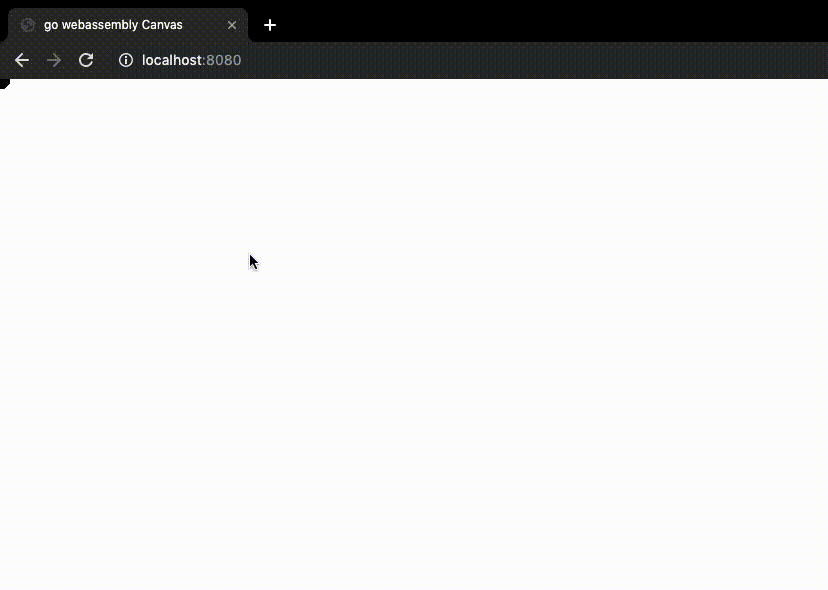
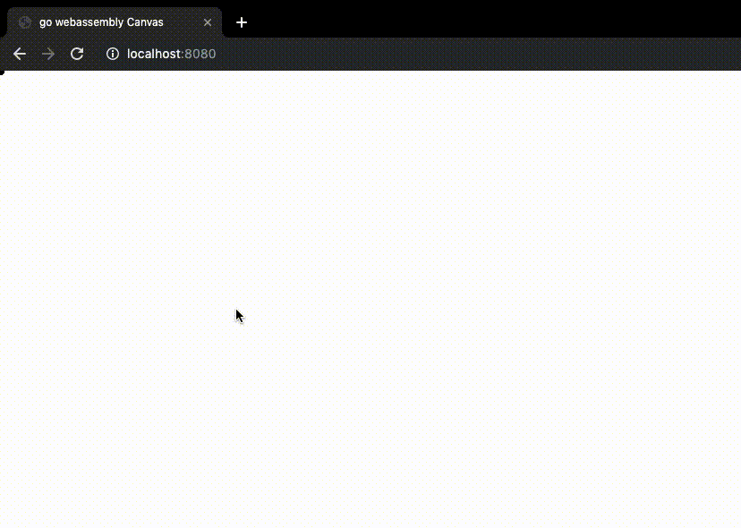

GoでCanvasをいじりたくなったので，試してみた．
とりあえず，MouseのDown,Up,Moveイベントが取れるかみてみました．
ここで使用しているsyscall/jsというパッケージは，wasmホスト環境つまりJSとの橋渡しとなるパッケージです．
jsをgoから呼び出すことや，jsからgoを呼び出すことが可能になります．
結果的にjsとGoが入り交じったコードになります．
以下wasm用のGoソースコード(main.go)
1
2
3
4
5
6
7
8
9
10
11
12
13
14
15
16
17
18
19
20
21
22
23
24
25
26
27
28
29
30
31
32
33
34
35
36
37
38
39
40
41
42
43
44
45
46
47
48
49
50
51
52
53
54
55
56
57
58
59
60
61
62
63
64
65
66
67
68
69
70
71
72
73
74
75
76
77
78
79
80
81
82
83
84
85
86
87
88
89
90
91
92
|
package main
import (
"math"
"syscall/js"
)
var (
mousePos [2]float64
ctx js.Value
)
func main() {
doc := js.Global().Get("document")
canvasEl := js.Global().Get("document").Call("getElementById", "mycanvas")
bodyW := doc.Get("body").Get("clientWidth").Float()
bodyH := doc.Get("body").Get("clientHeight").Float()
canvasEl.Set("width", bodyW)
canvasEl.Set("height", bodyH)
ctx = canvasEl.Call("getContext", "2d")
done := make(chan struct{}, 0)
mouseDown := false
mouseDownEvt := js.FuncOf(func(this js.Value, args []js.Value) interface{} {
mouseDown = true
evt := args[0]
if evt.Get("target") != canvasEl {
return nil
}
mousePos[0] = evt.Get("clientX").Float()
mousePos[1] = evt.Get("clientY").Float()
return nil
})
defer mouseDownEvt.Release()
mouseUpEvt := js.FuncOf(func(this js.Value, args []js.Value) interface{} {
mouseDown = false
return nil
})
defer mouseUpEvt.Release()
mouseMoveEvt := js.FuncOf(func(this js.Value, args []js.Value) interface{} {
if !mouseDown {
return nil
}
evt := args[0]
if evt.Get("target") != canvasEl {
return nil
}
mousePos[0] = evt.Get("clientX").Float()
mousePos[1] = evt.Get("clientY").Float()
return nil
})
defer mouseMoveEvt.Release()
doc.Call("addEventListener", "mousedown", mouseDownEvt)
doc.Call("addEventListener", "mouseup", mouseUpEvt)
doc.Call("addEventListener", "mousemove", mouseMoveEvt)
var renderFrame js.Func
renderFrame = js.FuncOf(func(this js.Value, args []js.Value) interface{} {
curBodyW := doc.Get("body").Get("clientWidth").Float()
curBodyH := doc.Get("body").Get("clientHeight").Float()
if curBodyW != bodyW || curBodyH != bodyH {
bodyW, bodyH = curBodyW, curBodyH
canvasEl.Set("width", bodyW)
canvasEl.Set("height", bodyH)
}
penColor := "#000"
penSize := 5
ctx.Set("fillStyle",penColor)
ctx.Call("beginPath")
ctx.Call("arc", mousePos[0], mousePos[1],penSize, 0, 2*math.Pi)
ctx.Call("fill")
js.Global().Call("requestAnimationFrame", renderFrame)
return nil
})
defer renderFrame.Release()
js.Global().Call("requestAnimationFrame", renderFrame)
<-done
}
|
javascriptのaddEventListenerをcallすることにより，mouse操作の関数を登録しています．
参考: マウスの操作について
以下，HTMLファイルです．
1
2
3
4
5
6
7
8
9
10
11
12
13
14
15
16
17
18
19
20
21
22
| <html>
<head>
<title>go webassembly Canvas</title>
<script src="wasm_exec.js"></script>
<script>
const go = new Go();
WebAssembly.instantiateStreaming(fetch('main.wasm'), go.importObject).then(res => {
go.run(res.instance)
})
</script>
<style>
body,pre { margin: 0;padding: 0;}
#mycanvas {
position: fixed;
top: 0; right: 0; bottom: 0; left: 0;
}
</style>
</head>
<body>
<canvas id="mycanvas"></canvas>
</body>
</html>
|
Canvasを画面全体に広げています．
これをブラウザで広げると，以下のような絵が描けるようになりました!


色々できるような気がしてきましたね．
続きはまた次回にしましょう